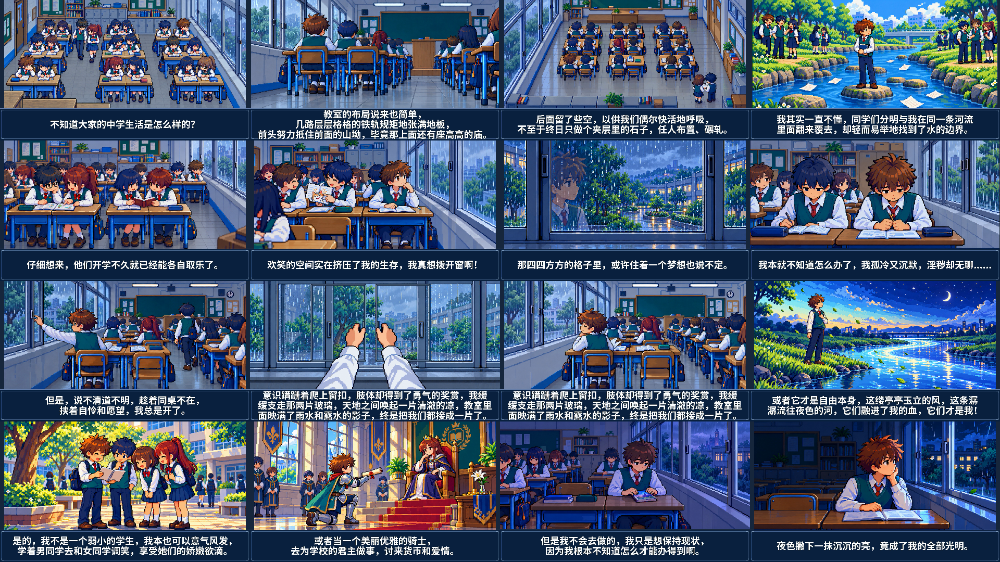

<!doctype html>
<html lang="zh-CN"><meta charset="utf-8"><meta name="viewport" content="width=device-width,initial-scale=1">
<title>窗 · 轻颗粒雨天版 · 曼波朗读</title>
<style>
:root{color-scheme:dark}*{box-sizing:border-box}body{margin:0;background:#091729;color:#e8eef7;font-family:system-ui,sans-serif;line-height:1.65}
main{max-width:1120px;margin:auto;padding:24px 18px}h1{margin:0;font-size:32px}p{margin:12px 0;color:#bccce0}
video{display:block;width:100%;height:auto;background:#071327;border:1px solid #41658a;margin:22px 0}
a{color:#a8d9ff}nav{display:flex;flex-wrap:wrap;gap:18px;margin-bottom:24px}.chapters{display:grid;grid-template-columns:repeat(auto-fit,minmax(230px,1fr));gap:8px}
button{color:#d9e9f8;text-align:left;background:#153048;border:1px solid #426886;padding:10px 12px;border-radius:4px;cursor:pointer;font:inherit}
button:hover,button:focus-visible{background:#21435e;outline:2px solid #9bd4ee}figure{margin:24px 0}img{display:block;width:100%;height:auto}figcaption{margin-top:8px;color:#b8cbe0}
</style><main>
<h1>窗</h1><p>轻颗粒雨天版 · 掌机 RPG 像素动画 · 全文曼波朗读 · 2 分 21 秒</p>
<video id="film" controls playsinline preload="metadata" poster="poster.png" aria-label="窗完整动画">
<source src="window-light-rain-mambo.mp4" type="video/mp4">请使用下方链接下载视频观看。</video>
<nav aria-label="下载"><a href="window-light-rain-mambo.mp4" download>下载完整视频</a><a href="subtitles.srt" download>原文字幕</a><a href="mambo-narration.mp3" download>曼波音轨</a></nav>
<div class="chapters" aria-label="镜头跳转"><button type="button" data-time="0">0:00 · 教室的拥挤</button>
<button type="button" data-time="6.26">0:06 · 桌列与高台</button>
<button type="button" data-time="16.83">0:16 · 后排的呼吸</button>
<button type="button" data-time="26.5">0:26 · 找不到河流的边界</button>
<button type="button" data-time="35.37">0:35 · 同学的小世界</button>
<button type="button" data-time="44.71">0:44 · 靠窗与欢笑的挤压</button>
<button type="button" data-time="53.07">0:53 · 方格里的梦想</button>
<button type="button" data-time="57.88">0:57 · 目光与沉默</button>
<button type="button" data-time="66.94">1:06 · 同桌离席，伸向窗扣</button>
<button type="button" data-time="75.05">1:15 · 第一人称横向推窗</button>
<button type="button" data-time="86.35">1:26 · 风进入教室</button>
<button type="button" data-time="95.35">1:35 · 风与流向夜色的河</button>
<button type="button" data-time="105.3">1:45 · 意气风发的想象</button>
<button type="button" data-time="115.37">1:55 · 优雅骑士与学校的君主</button>
<button type="button" data-time="122.2">2:02 · 回到原位，仍跑不出去</button>
<button type="button" data-time="134.52">2:14 · 夜色里的全部光明</button></div>
<figure><figcaption>教室、开窗、河流、骑士与夜色。</figcaption></figure>
</main><script>
const movie=document.getElementById('film');
document.querySelectorAll('[data-time]').forEach(button=>button.addEventListener('click',()=>{
const seek=()=>{movie.currentTime=Number(button.dataset.time);movie.play().catch(()=>{});};
if(movie.readyState>=1)seek();else{movie.addEventListener('loadedmetadata',seek,{once:true});movie.load();}
}));
</script></html>
